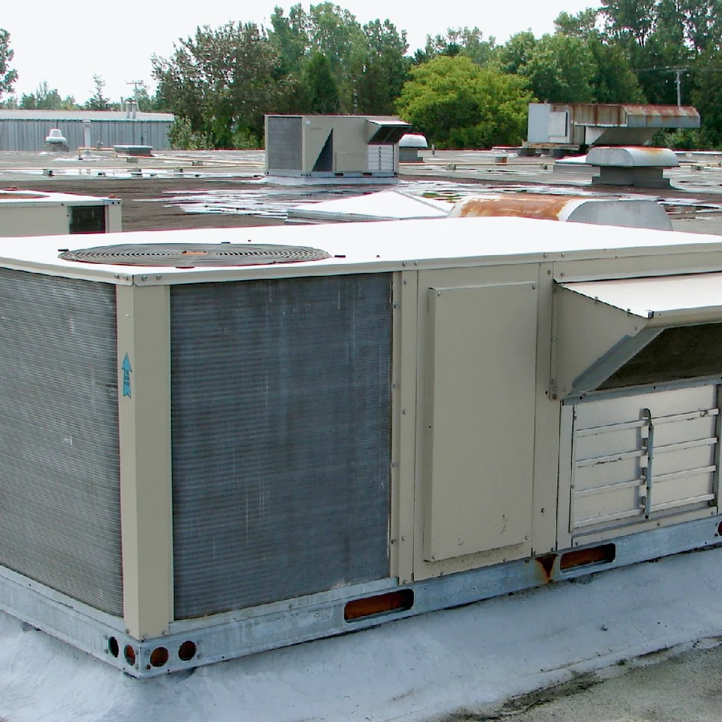

Skilled Local ProsConnect with providers who handle real HVAC problems every day.
Reliable HVAC Help for Every Season
Repair, replace, maintain, and improve your climate system with one clear service request.
Practical SchedulingSend the details and choose a service window that works.
Clear Service PathsUnderstand repair, maintenance, upgrade, and replacement options.
Air Conditioning and Heating Specialists
Frostline HVAC helps homeowners and small businesses move from HVAC problems to clear next steps. Compare repair, replacement, maintenance, airflow, and control options, then send one complete request to start the service process.
About CompanyComplete HVAC solutions for every need
Use the directory below to find the right service path. Each service page explains what is included, when it fits, how the visit works, and what details matter.
From Cooling Problems to Heating Solutions
Frostline HVAC helps customers move through the full comfort cycle: inspection, repair, replacement, airflow improvements, controls, and seasonal care. The goal is simple: make the next service step clear, practical, and matched to the condition of the system.

24h
Typical Request Review Window
AC+
Heating, Airflow and Controls Covered
Why Choose Us
Clear service details, practical routing, and full-cycle HVAC support help customers understand what to request before a provider visit begins.
Service-Focused Matching
Requests are organized by repair, installation, maintenance, ducts, controls, or urgent support.
Clear Scope Details
Each service page explains what can be included, when it fits, and what affects the final visit.
Full HVAC Coverage
Cooling, heating, airflow, thermostat controls, equipment replacement, and seasonal care are covered.
Better Request Intake
System symptoms, equipment type, access notes, and timing can be sent in one structured request.
Urgent Issue Routing
No cooling, no heat, leaks, and safety concerns are separated from routine service needs.
No Guesswork Path
Customers can compare options before contacting a provider instead of starting from a vague request.
Our Happy Customers
Realistic service experiences from homeowners who needed clearer repair, maintenance, installation, and comfort-control support.
Any questions?
How do I know which HVAC service to request?
Start with the symptom: no cooling, weak airflow, odd noise, thermostat trouble, or seasonal maintenance. The service pages separate the likely next steps so the request is clearer.
When should maintenance be scheduled?
Most systems benefit from a tune-up before heavy cooling or heating seasons. If comfort drops, bills climb, or airflow changes, it is worth requesting a check sooner.
Can I compare repair and replacement options?
Yes. Share equipment age, symptoms, recent repairs, and access notes. That gives the provider better context for repair, replacement, controls, or airflow recommendations.
What details help with a faster quote?
Include the equipment type, location, problem timeline, photos if available, preferred service window, and whether the issue is urgent or routine.
Do emergency requests follow a different path?
Urgent issues such as no heat, no cooling, active leaks, electrical concerns, or safety shutdowns should be marked clearly so they can be routed differently from routine visits.
Ready when your system needs attention
Start Request
Get a clear HVAC service plan before the next season hits.
Send the symptoms, equipment type, and preferred timing. A complete request helps the provider respond with the right repair, maintenance, or replacement path.